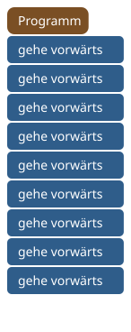
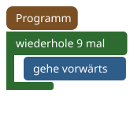

Zählschleife
Mit einem KI-Tutor lernen
Ein KI-Tutor erklärt dir diese Seite und hilft dir bei den Aufgaben. Wähl deinen Assistenten:
Mit Claude öffnen Mit ChatGPT öffnen Mit Mistral Vibe öffnen
Du nutzt dein eigenes Konto beim Anbieter. Der Assistent ist kein Angebot von lernapps.net: lernapps liefert nur Inhalte und Aufgaben. Die Wahl gilt für alle Seiten, nur auf diesem Gerät.
Neunmal derselbe Block
Im Klassenchat der 7b:
Jona: Mein Gang ist 9 Felder lang. Ich hab 9-mal „gehe vorwärts“ gezogen 😩
Selin: Nimm „wiederhole … mal“. Dann reicht ein „gehe vorwärts“.
Jona: Und wie oft wiederholt Kiko?
Hier lernst du, wie Kiko Blöcke mit einer Zählschleife mehrmals ausführt.
Aufgabe
Lösung
Feld A
So wäre es nach drei Durchläufen. Die Schleife läuft aber nur 2-mal.
Feld B
Das ist das Ende des ersten Durchlaufs. Danach läuft die Schleife noch ein zweites Mal.
Feld C richtige Antwort
Richtig: Erster Durchlauf 2 Felder nach rechts, links drehen. Zweiter Durchlauf 2 Felder hoch, links drehen.
Feld D
Du hast die Drehungen übersehen. Nach jedem Durchlauf dreht Kiko sich nach links.
Kiko führt den ganzen Inhalt der Schleife aus, dann noch einmal. Nach 2 Durchläufen steht er in Spalte 4, Zeile 4.
Wiederholen mit fester Anzahl

© CC-BY-4.0Jonas Programm mit 9 Blöcken

© CC-BY-4.0Selins Programm mit 2 Blöcken. Kiko läuft genauso weit.
- Zählschleife
Eine Zählschleife (Wiederholung mit fester Anzahl) führt ihren Schleifenrumpf so oft aus, wie die Zahl sagt.
- Schleifenrumpf
Der Schleifenrumpf sind die Blöcke in der Schleife. Er ist eine Sequenz, die mehrmals ausgeführt wird.
Merke
Eine Schleife wiederholt Anweisungen. „wiederhole … mal“ ist selbst eine Anweisung, aber kein einfacher Befehl: Sie steuert die Anweisungen in ihrem Rumpf. Zähl die Felder, die Kiko gehen soll. Sein eigenes Feld zählt nicht mit. In einem Durchlauf führt Kiko den ganzen Rumpf aus, von oben nach unten, erst dann beginnt der nächste.
Selbst ausprobieren
Ohne Computer: Legt die Karte „wiederhole ___ mal“ mit einer Zahl und Karten darin. Kiko sagt bei jedem Durchlauf laut, der wievielte es ist.

Mit Computer, zwei Challenges:
- 9 Felder bis zum Ziel, mit höchstens 3 Blöcken: Challenge „Der lange Gang“ öffnen
- Eine Treppe mit Stufen aus 2 Feldern: Challenge „Die breite Treppe“ öffnen
 © CC-BY-4.0
© CC-BY-4.0Die Treppe. Jede Stufe braucht dieselben Blöcke.
Übung
Aufgabe
Drei Beispielaufgaben, jede mit ihrer Lösung:
Aufgabe Nr. 1
Im Schleifenrumpf von „wiederhole 7 mal“ stehen 2 Befehle. Wie viele Befehle führt Kiko insgesamt aus?
Tipp
Wie viele Befehle sind es in einem Durchlauf? Und wie viele Durchläufe gibt es?
Lösung
- Ein Durchlauf: 2 Befehle.
- 7 Durchläufe: 7 · 2 = 14 Befehle.
Richtige Antwort: 14
Aufgabe Nr. 2
Im Schleifenrumpf von „wiederhole 6 mal“ stehen 2 Befehle. Wie viele Befehle führt Kiko insgesamt aus?
Tipp
Wie viele Befehle sind es in einem Durchlauf? Und wie viele Durchläufe gibt es?
Lösung
- Ein Durchlauf: 2 Befehle.
- 6 Durchläufe: 6 · 2 = 12 Befehle.
Richtige Antwort: 12
Aufgabe Nr. 3
Im Schleifenrumpf von „wiederhole 3 mal“ stehen 2 Befehle. Wie viele Befehle führt Kiko insgesamt aus?
Tipp
Wie viele Befehle sind es in einem Durchlauf? Und wie viele Durchläufe gibt es?
Lösung
- Ein Durchlauf: 2 Befehle.
- 3 Durchläufe: 3 · 2 = 6 Befehle.
Richtige Antwort: 6
Aufgabe
Drei Beispielaufgaben, jede mit ihrer Lösung:
Aufgabe Nr. 1
Kiko steht am Anfang eines geraden Gangs und schaut zum Ziel. Zählst du die Felder von Kiko bis zum Ziel, das Ziel mit, aber Kikos Feld nicht, sind es 4. Welche Zahl gehört in „wiederhole … mal: gehe vorwärts“?
Tipp
Jedes „gehe vorwärts“ bringt Kiko genau ein Feld weiter.
Lösung
- Kiko muss 4 Felder gehen, jedes mit einem „gehe vorwärts“.
- Also: wiederhole 4 mal gehe vorwärts.
Richtige Antwort: 4
Aufgabe Nr. 2
Kiko steht am Anfang eines geraden Gangs und schaut zum Ziel. Zählst du die Felder von Kiko bis zum Ziel, das Ziel mit, aber Kikos Feld nicht, sind es 11. Welche Zahl gehört in „wiederhole … mal: gehe vorwärts“?
Tipp
Jedes „gehe vorwärts“ bringt Kiko genau ein Feld weiter.
Lösung
- Kiko muss 11 Felder gehen, jedes mit einem „gehe vorwärts“.
- Also: wiederhole 11 mal gehe vorwärts.
Richtige Antwort: 11
Aufgabe Nr. 3
Kiko steht am Anfang eines geraden Gangs und schaut zum Ziel. Zählst du die Felder von Kiko bis zum Ziel, das Ziel mit, aber Kikos Feld nicht, sind es 5. Welche Zahl gehört in „wiederhole … mal: gehe vorwärts“?
Tipp
Jedes „gehe vorwärts“ bringt Kiko genau ein Feld weiter.
Lösung
- Kiko muss 5 Felder gehen, jedes mit einem „gehe vorwärts“.
- Also: wiederhole 5 mal gehe vorwärts.
Richtige Antwort: 5
Aufgabe
Lösung
Richtige Antwort: vorwärts, vorwärts, vorwärts – wiederhole 3 mal: vorwärts; rechts, rechts – wiederhole 2 mal: rechts; vorwärts, links, vorwärts, links – wiederhole 2 mal: vorwärts, links; vorwärts, vorwärts, links, vorwärts, vorwärts, links – wiederhole 2 mal: vorwärts, vorwärts, links
Such das Stück, das sich wiederholt. Das wird der Schleifenrumpf, und die Zahl sagt, wie oft es vorkommt.
Aufgabe
Lösung
Richtige Antwort: Die Aussage stimmt nicht.
In jedem Durchlauf führt Kiko den ganzen Rumpf aus: vorwärts, links, vorwärts, links, vorwärts, links.
Wie es weitergeht
Du kannst jetzt mit einer Zählschleife Blöcke mehrmals ausführen lassen. Selin schreibt: „Mein Labyrinth hat Gänge, die jedes Mal anders lang sind. Welche Zahl soll ich da eintragen?“ Auf der nächsten Seite wiederholt Kiko, ohne vorher zu zählen.
Fehler gefunden oder eine Idee für diese App?